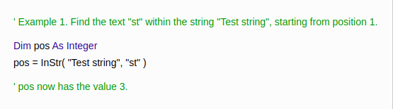
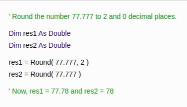
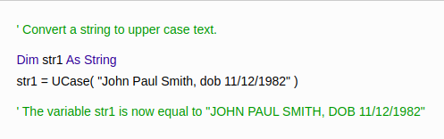

If you’ve ever used macros in Excel, you’ve used Visual Basic for Applications (VBA). VBA is human-readable(and editable) programming code that gets generated
when you record a macro. When you run a macro it’s this code that Excel reads to replay your actions.
The following is a series of frequently asked questions about VBA, with answers for both newcomers to Excel macros and seasoned programmers.
What is VBA used for in Excel?
- VBA is used to write macros, which automate simple and complex tasks in Excel.
- Users of Microsoft Excel will often find themselves repeating the same series of tasks over and over again
- Sometimes these are minor tasks like copy-pasting subsets of data to different sheets
- sometimes the tasks are more complex like uploading data to a website
- With VBA, macros can be programmed to automate tasks like these, turning a series of manual operations into a single button click.
How do i start with VBA Excel
The easiest way to get started with macros is to record them using the Macro Recorder built into Excel.
The macro recorder generates VBA code which you can read and edit, giving you a stepping-stone to learn how to code your own macros from scratch.
How can I access VBA code?
- The VBA editor can be opened at any time by pressing the ALT+F11 keyboard shortcut.
From here, you can access the code for all open workbooks.
- You can double-click any workbook, sheet, or module object in the Project window to show the VBA code contained in it
Recorded macros will always appear in modules, which is where you’ll typically want to write your own macros too.
Advantages of using VBA Code
- First of all: if there’s something you can do in Excel, you can write VBA code to do the same thing.
If you learn the commands (using the macro recorder or online resources), you can string together
several actions together in a single macro.
- Second: you can use VBA to write user-defined functions for use in worksheet
formulas – much like the “=SUM()” function, for example.
Although Excel already packs a large variety of functions, if you find yourself wanting a function that’s more specific
to your industry or workplace, you can add it with VBA.
-
Third: you can use VBA to add logic (If statements) and loops (repeat actions) to your macros.
This means that a macro can be more than a recording of actions – it can be a real program with smart repetition and decision-making.
-
Fourth: VBA allows you to build user interfaces, giving users an easier way to interact with your macros.
These interfaces can be simple buttons on a worksheet, or complex UserForms with rich controls like TreeViews and FlexGrids.
-
Fifth but not finally: VBA allows you to harness almost any resource your computer or the internet by using external DLL libraries.
You can automate a lot more than Excel this way, like accessing web services and databases, parsing XML files,
interoperating with other Microsoft Office applications, and much, much more.
Diffences between VB and VBA
The VBA language is identical to Visual Basic 6.0. If you have experience writing VB6 code, you can write VBA.
The VB Editor in Excel is a stripped-down version of the VB6 editor, with similar debugging capabilities and components
like the ‘Project’ and ‘Properties’ windows.
The Form editor is also very similar, although it has some limitations (like the inability to create control arrays).
Less similar to VBA is Visual Basic .NET. Although these languages share many of the same keywords and syntaxes,
the code between these languages is less interoperable. You wouldn’t have to re-write much (if anything) to port a procedure
from VB6 to VBA, but you couldn’t do the same from VB.NET.
What does a VBa Developer do?
Role of a Developer
Often, people who create macros aren’t developers
- they’re analyst
- traders
- accountants
- or scientists
who have had training in programming and use VBA on more of an ad-hoc basis.
People who focus on VBA development tend to create more refined tools – they create
- Add-ins
- User interfaces with Forms
- Interactive dashboards
- report generators, and more.
Importance
VBA is included as standard in all Microsoft Office applications, including Excel. Excel is one of the most popular programs
in the world and finds use in a wide variety of fields and workplaces, all with their own unique workflows and use-cases.
By not using automation, countless work-hours are wasted every week performing boring, repetitive tasks at a human speed.
Automation with VBA can perform the same tasks at the computer’s lightning-quick pace, letting users focus on the important
aspects of their work, being more productive – and maybe getting out of the office a little earlier!
Is VBA a good programming language?
VBA can’t be used to create standalone programs
VBA has the typical programming elements like variables, arrays, functions, decisions and loops. It has a syntax that’s easy to read,
and can harness a lot of power from Windows and other services.
On the downside, error-handling isn’t very elegant in VBA. While other languages use “try-catch-finally” code blocks,
VBA uses “On Error” statements to modify how macros behave when an error occurs.
Additionally, VBA can’t be used to create standalone programs, web sites or services, and it can’t interface with newer programming
APIs like the .NET platfor
Things you can do
The VBA InputBox function displays a dialog box, prompting the user for input, and containing an OK button and a Cancel button.
The function returns a text string containing the user's input if the OK button is selected or an empty text string if the Cancel button is selected.
The syntax of the InputBox function is:
InputBox( Prompt, [Title], [Default], [XPos], [YPos], [HelpFile], [Context] )

The Excel VBA InStr function returns the position of a substring within a string, as an integer.
If the substring is not found, the function returns the value 0.
The syntax of the InStr function is:
InStr( [Start], String1, String2, [Compare] )

The VBA Round function rounds a numbers to a specified number of decimal places.
The syntax of the function is:
Round( Number, [NumDigitsAfterDecimal] )

The VBA UCase function converts a supplied String into upper case text.
The syntax of the function is:
UCase( String )
